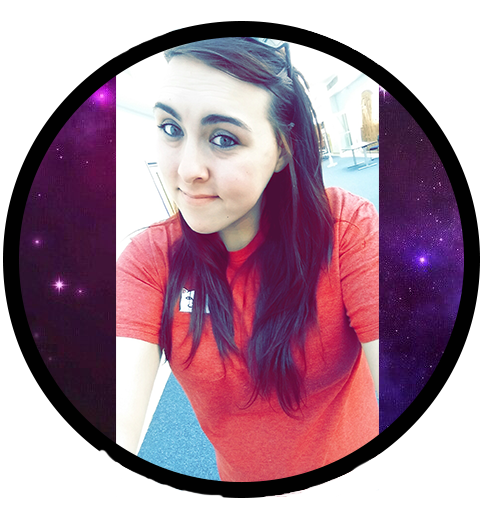

OUT OF THIS WORLD DESIGNS
Print and Business Branding Design
About Me
Graphic Designer focusing on print media and helping you to brand your business.
Full time studen at UCONN Stamford. Working in the field of Digital Media and Design. I specialize in print media such as: posters, invitations, newletters, brochures, etc. I can also help you brand your business with special work such as: logo design, creating busniess cards, letter heads, pamphlets, company shirts, and more.

My Logo Design
Personal Inspiration for my self branding.
As a kid, I would lay in field and look up into the stars. Whenever a plane would fly over, my young mind would be convinced that it was aliens in UFOs. Later on in life, I got my first tattoo; a custom designed alien and spaceship in a galaxy, created by my best friend. It reflects my quirky personality and my wild imagination.
My Skills and Programs Used